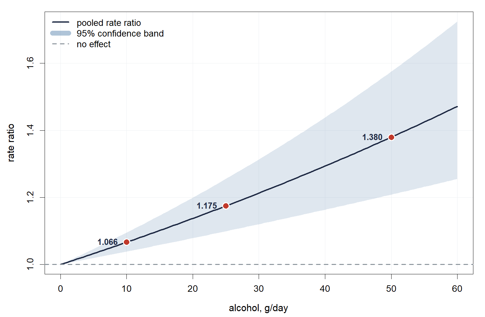
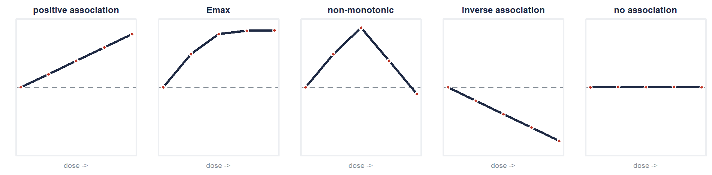

The model is delegated; the words for the curve are not
This package does not fit anything. The book's statistics chapter fits with
dosresmeta, on the eight-cohort alcohol and colorectal cancer
example that package ships.
library(dosresmeta) data(alcohol_crc) fit <- dosresmeta(formula = logrr ~ dose, type = type, id = id, se = se, cases = cases, n = peryears, data = alcohol_crc) summary(fit)$coefficients
(Intercept) is the dose slope, on the log scale, per
unit of dose.
A fitted curve has to be described in words at some point, and the words should be the ones the literature uses. Feed it the predicted effects and it returns one of five labels.
pred <- predict(fit, newdata = grid, expo = FALSE) curve_shape(grid$dose, pred$pred) #> [1] "positive association"
Emax is judged against the curve's own steepest step rather than its overall range, which is what separates a genuine plateau from a curve that merely decelerates.
| The curve | Returns |
|---|---|
| rises throughout | positive association |
| rises, then flattens | Emax |
| rises, then turns down | non-monotonic |
| falls throughout | inverse association |
| flat | no association |
The labels describe how the effect changes from one dose to the next, not where the curve sits, so log effects and the ratios themselves give the same answer.
